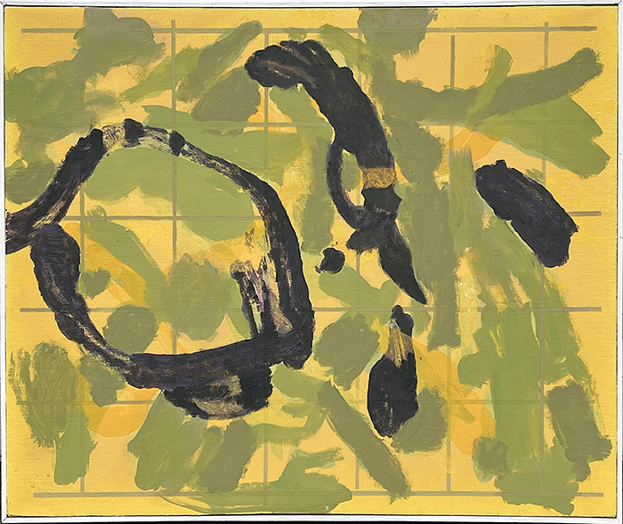
Yellow Leaf, Oil on Canvas, 24 x 20 inches, 2023

Yellow Leaf, Oil on Canvas, 24 x 20 inches, 2023
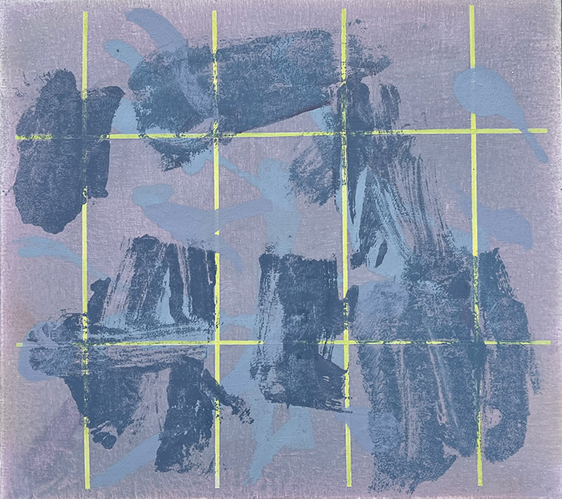
Grey Leaf, Oil on Canvas, 16 x 18 inches, 2024
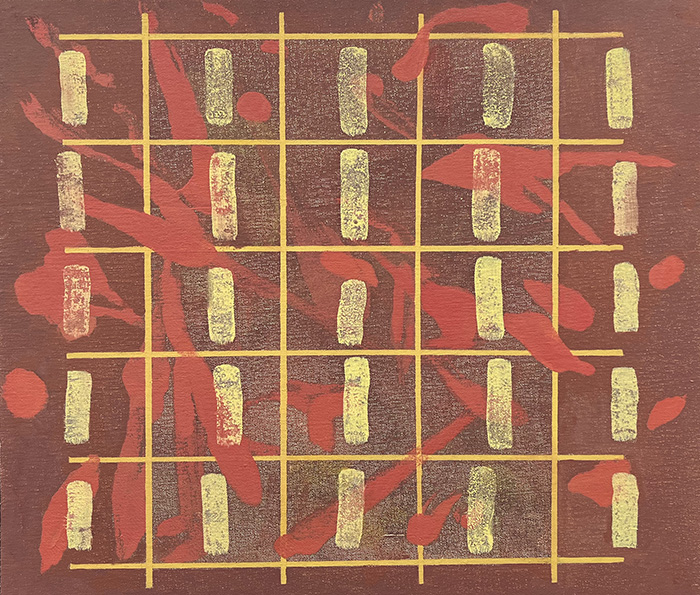
Red Leaf, Oil on Canvas, 18 x 21 inches, 2024
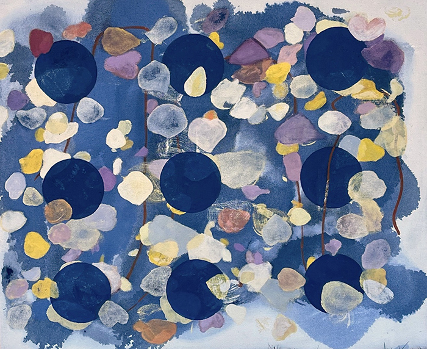
Leaf and Asphalt, Oil on Canvas, 22 x 28 inches, 2022
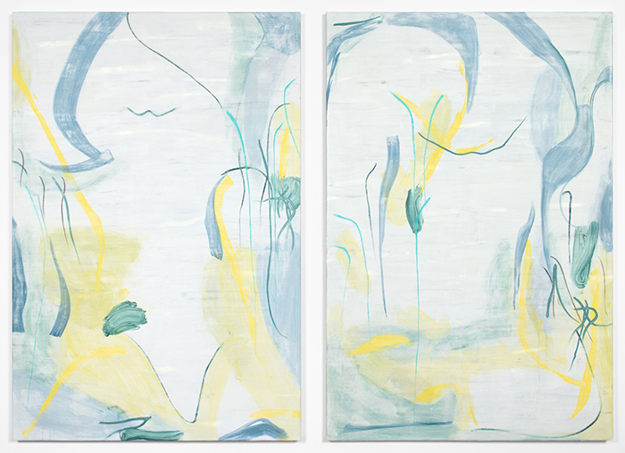
Untitled 5 (Diptych), oil on canvas, 6ft x 8ft, 2013
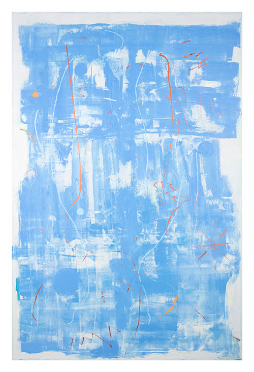
Dumpster, oil on canvas, 4ft x 6ft, 2014
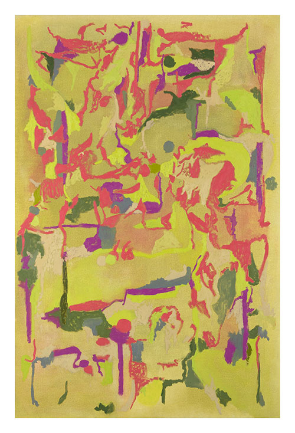
Pothos Abstraction (Neon), oil on canvas, 4ft x 6ft, 2013
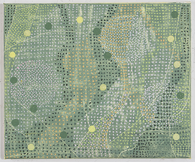
Pin Oak, oil on canvas, 15" x 18", 2016
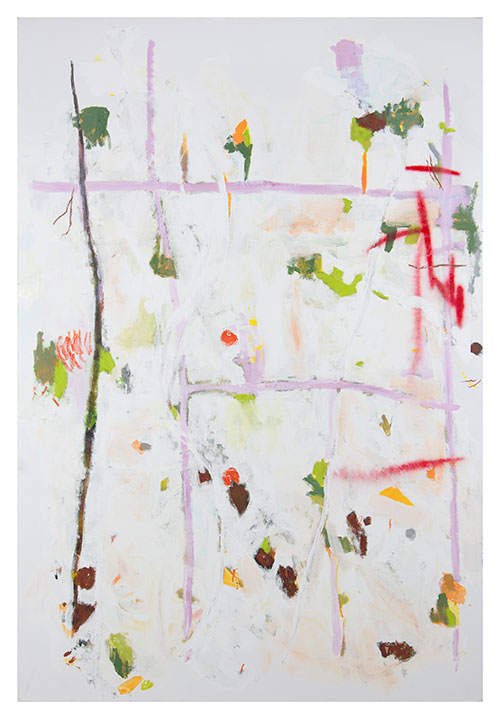
The Fall (edit), oil and enamel on canvas, 4 x 6 ft, 2014
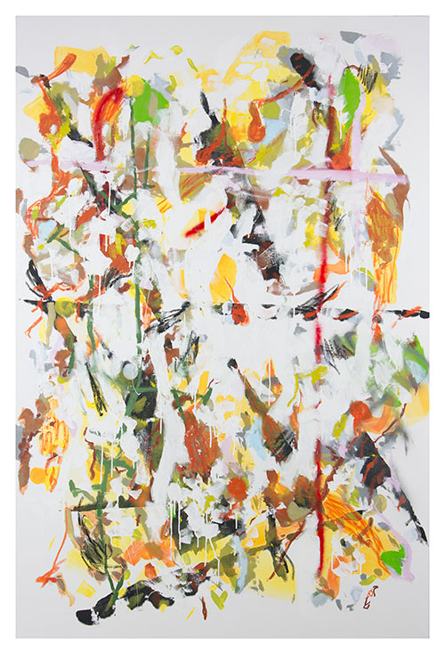
The Fall (full), oil and enamel on canvas, 4 x 6 ft, 2014
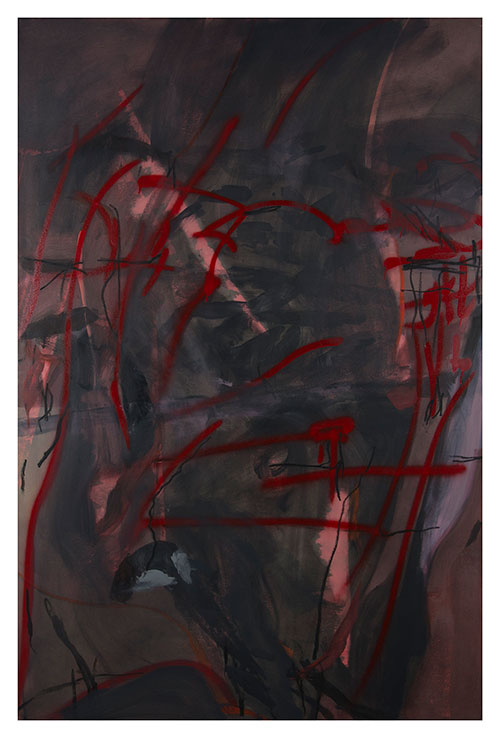
So The Seagull Left, oil on canvas, 2014, 4 x 6 ft
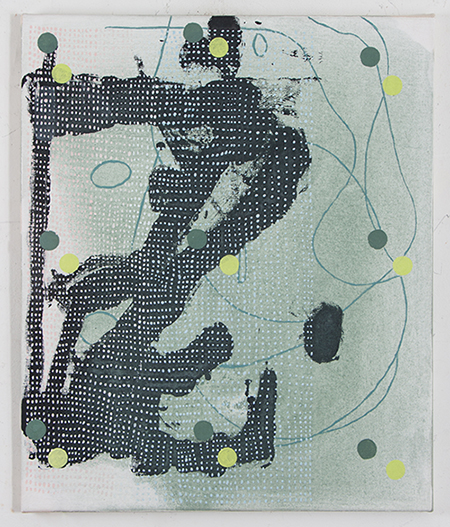
Arrangement in Green, oil on canvas, 24" x 20", 2016
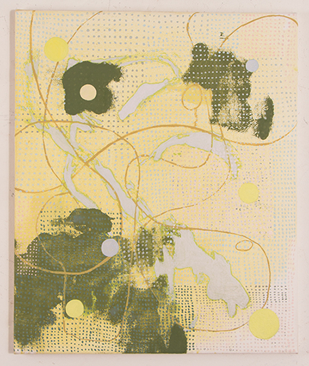
Arrangement in Yellow, oil on canvas, 24 in x 20 in, 2016

Deli Flowers, oil on canvas, 4 x 6ft, 2013
.jpg)
Deli Flowers (Purple), oil on canvas, 4 x 6ft, 2013

Rug Collage, oil on linen, 11" x 16", 2012
.jpg)
Early Spring (Triptych), oil on canvas, 13 x 6ft, 2014
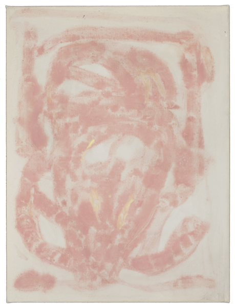
Pink Bug, oil on linen, 18" x 24", 2008

Stars, oil on linen, 16" x 12", 2006
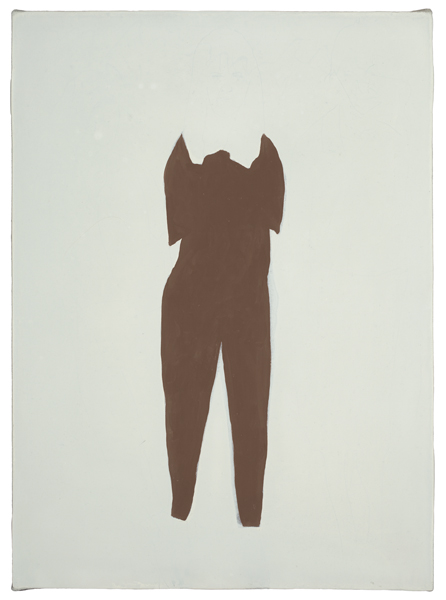
Raincoats, oil on linen, 12" x 16", 2005
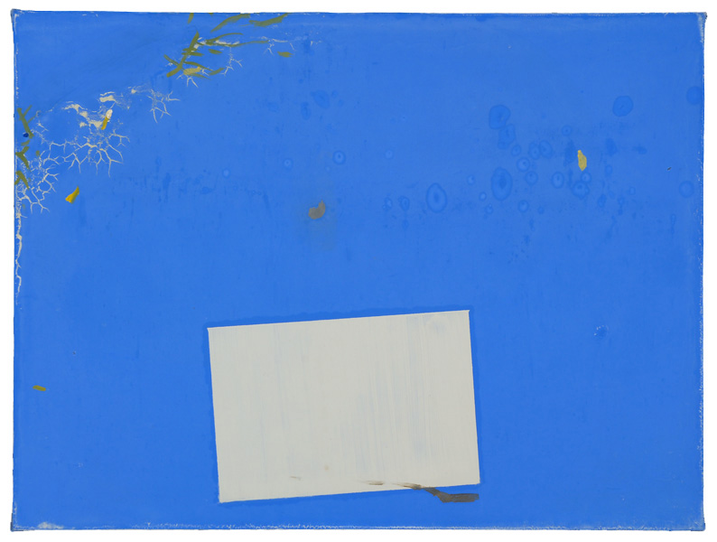
Tarp, oil on linen, 16" x 12", 2005
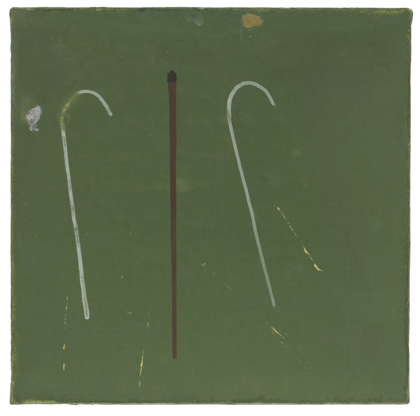
Hooks, oil on linen, 12" x 12", 2005
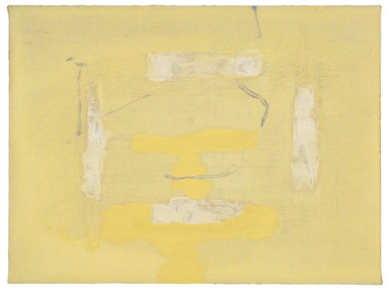
Tape, oil on linen, 16" x 12", 2005
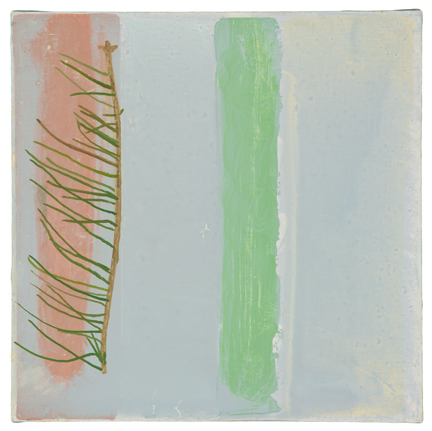
Pine, oil on linen, 12" x 12", 2004
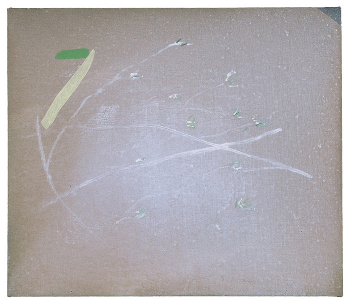
Sticks & Water, oil on linen, 20" x 23", 2004